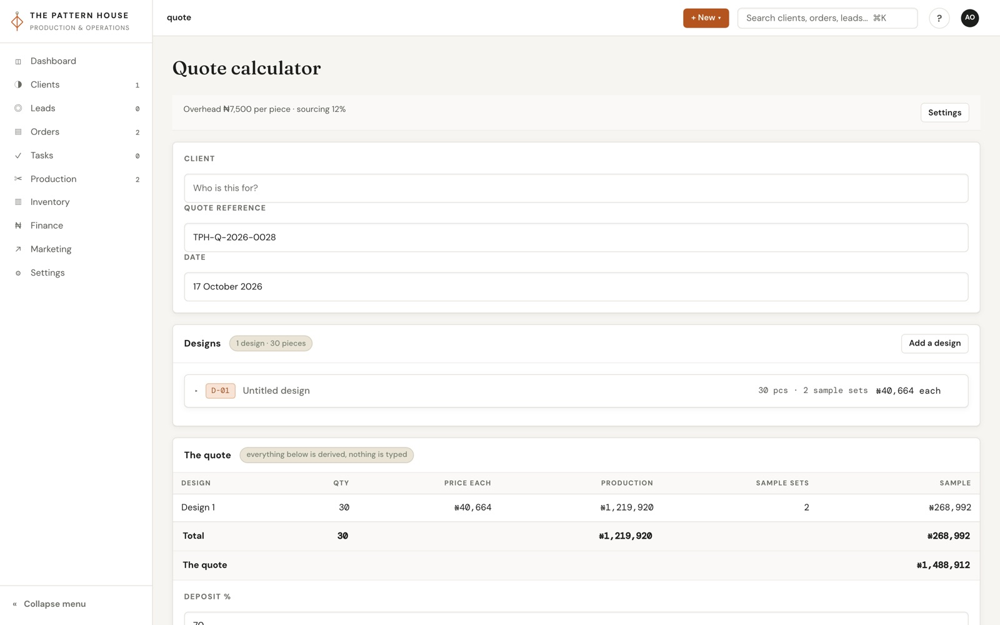
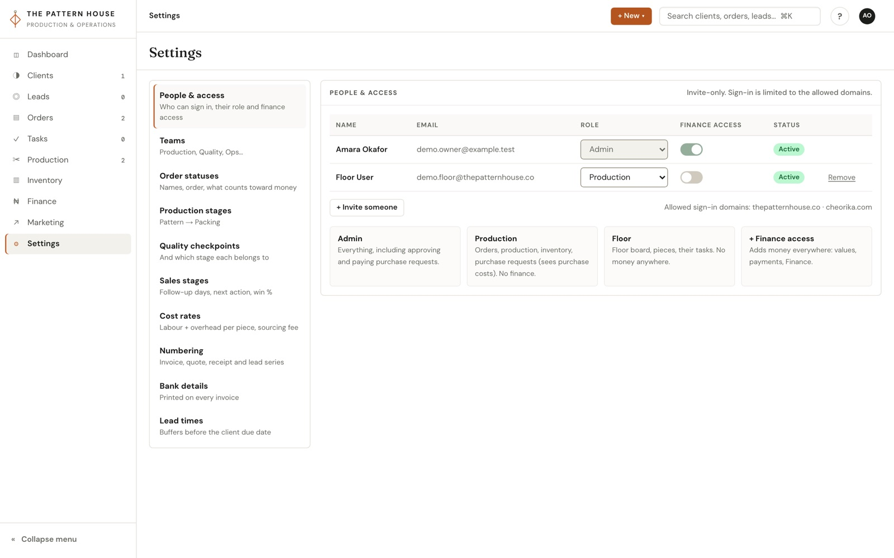
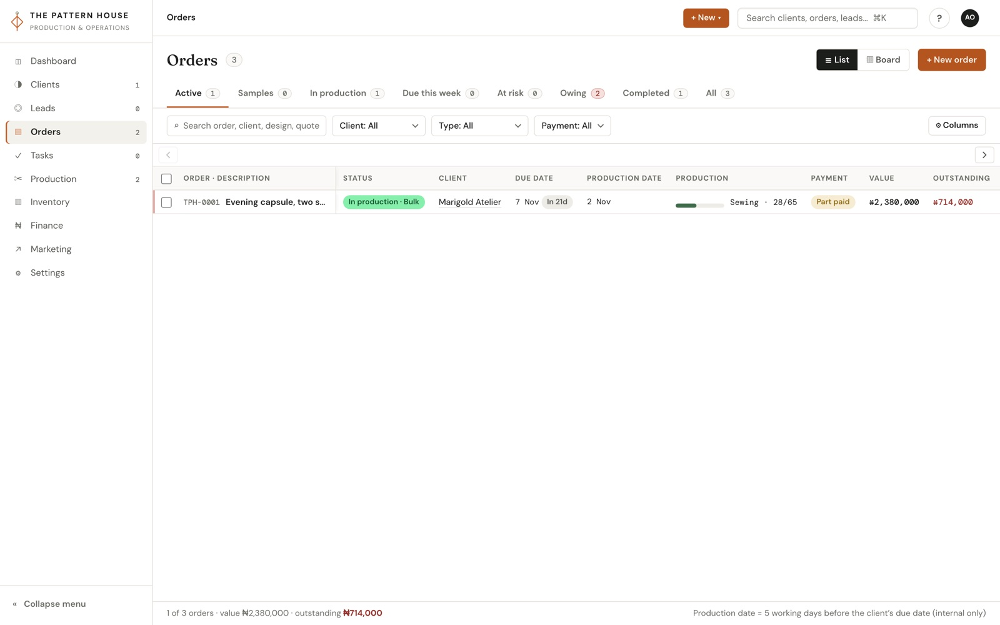
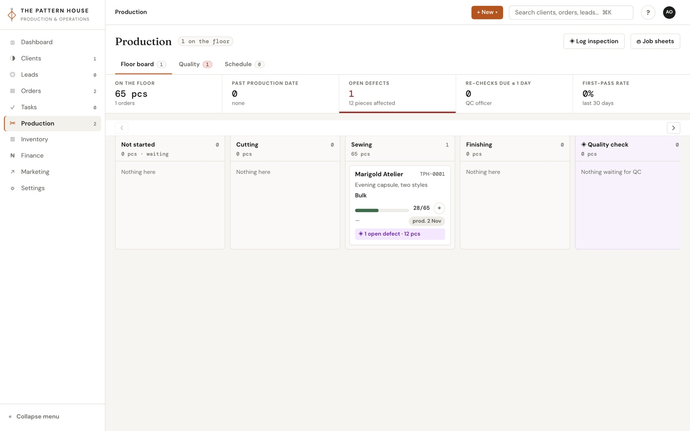
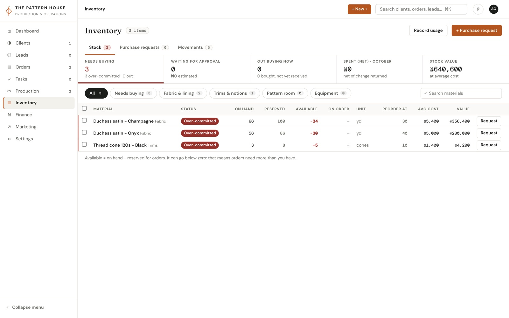
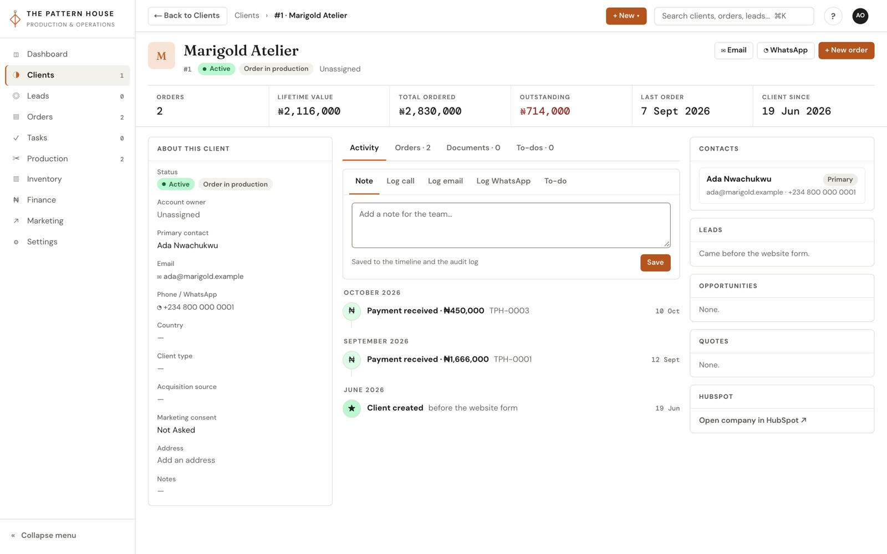

Cutting a factory's sales cycle from 45 days to 15
A garment studio was running sales, production and money across five tools that never agreed. I designed, built and shipped one platform that carries every job from first inquiry to cash, and it changed how fast the business wins clients.
Leads, quotes, orders and receipts lived in five tools. Winning a client took about 45 days.
TTaskBuild one system from first inquiry to cash, and win clients faster.
AActionRedesigned the pipeline, wrote the money rules, built and shipped it in three weeks.
RResult45 → 15 days to win a client. 125 leads, 23 clients, ₦21M+.
Five tools, none of them agreeing
"What is this order really making us?" Nobody could answer without a day of reconciliation.
The Pattern House website was bringing in good inquiries. Then each one disappeared into WhatsApp threads. Quotes were worked out in a separate calculator, deals tracked in a CRM, orders in a spreadsheet and receipts on paper.
Follow-ups depended on someone remembering. When we traced the numbers by hand, quotes were underpriced and a running total typed into a cell had already caused an over-purchase of stock.
One system from first inquiry to cash
I owned this end to end: the problem, the product decisions, the design, the build and the release. My brief to myself was simple. Make winning a client faster, and make every number trustworthy.
That meant replacing all five tools at once, for a team of sales, production and floor staff who would use it every day, without stopping the factory.
- Win clients faster with one pipeline, named owners and follow-up that runs itself
- Price every quote from real cost rates, so each order shows what it makes
- Run sales, production, stock and money in one place
- Switch over from the spreadsheet without losing a single kobo
What I did, step by step
Redesigned the path from lead to client
I rebuilt the sales workflow around clear stages and a named owner at every stage. Moving a deal forward sends the right email, delivers the SOP and SLA, and sets the next follow-up automatically.
A lead becomes a client the moment the first payment lands, in the same step that opens the order and records the receipt.
Why it mattered: nothing waits on someone's memory, so deals stop stalling between stages.Wrote the money and stock rules before any screen
I treated the arithmetic as the product. Before design started, I wrote one binding decision record for how stock and money behave, so every engineer built against the same rules.
Prices are derived from cost-rate settings, never typed. Stock levels are calculated from an immutable ledger, never stored as a running total, because a stored total is exactly what caused the over-purchase.
Why it mattered: the studio finally knows what each order makes before saying yes to it.
Put the whole factory in one platform
Sales, quotes and invoices, orders, production planning, quality control, inventory and purchasing, finance and marketing now share one database and one source of truth.
Buying works the way the studio actually buys: production raises a request, an admin approves and pays, someone buys at the market with a receipt photo, and stock is received against the order.
Why it mattered: one place to quote, invoice, plan, inspect, buy and close the month.Protected the money by role
Three roles, Admin, Production and Floor, plus a separate finance-access switch. Order value, payments and margin are removed on the server for anyone without it, not just hidden on screen.
Every change is written to an audit log in the same transaction, and the build fails if any write skips it.
Why it mattered: floor staff get the tool they need without seeing what they shouldn't.
Switched over without losing a kobo
The old spreadsheet held every lead, order and receipt since the studio opened, with duplicates and totals that had drifted. I would not move the business on an import that was "close".
The import had to reconcile every receipt to the kobo before it could touch production, and it was rehearsed until it passed with zero stops. Every record then came across in a single release window and verified one to one.
Why it mattered: the team trusted the new system from day one.- Rehearse the import on copies until zero stops
- Freeze the spreadsheet
- Back up the database
- Migrate, import, verify one to one
- Release. The sheet becomes read-only history




Click any screenshot to see it full size. Every client, order and figure shown is invented demo data.
Clients won in a third of the time

The factory now quotes, invoices, plans, inspects, buys and closes the month in one place. On top of it I set up a business performance framework: company goals, departmental KPIs, management dashboards and recurring reviews across Sales, Client Operations, Production, QC, Finance, Administration and Marketing. And "what is this order really making us?" is answered on the screen.
Why this worked
Systems thinking
Designed the workflow and the rules first, so every screen fit one model of how the business runs.
Commercial focus
Aimed every decision at one outcome: win clients faster and know what each order makes.
Hands-on AI building
Led an AI engineering team from empty repository to production in three weeks, 250+ reviewed pull requests.
A high quality bar
When 300+ passing tests still missed 33 problems in user testing, I added real end-to-end journeys against staging.
Behind the scenesMore product decisions and the lesson I took away
Behaviour lives in flags, not names
Whether a status reserves stock or counts toward money is a flag, so renaming a status cannot silently break the maths.
Derive dates the client never sees
The production deadline is five working days before the client's due date, calculated on the server from one stored date.
Copy proven layouts, not code
When the first leads screen fell flat, I had the team map each screen to established CRM patterns and rebuild in the studio's own look.
Spend nothing new on infrastructure
It runs as a second project in the existing hosting team with its own database. Incremental cost: zero per month.
Lesson: green ticks are not evidence.
At the first user acceptance round, more than three hundred unit tests were passing and the floor still found 33 problems, because nothing clicked a button and CI was not running the tests. A quarter of the test files checked that code looked right, not that it worked. Now I ask what a test actually exercises before I count it.
The website that feeds it: rebuilt as a sales product
How every inquiry started landing qualified and attributed, and why I rolled back my own redesign.